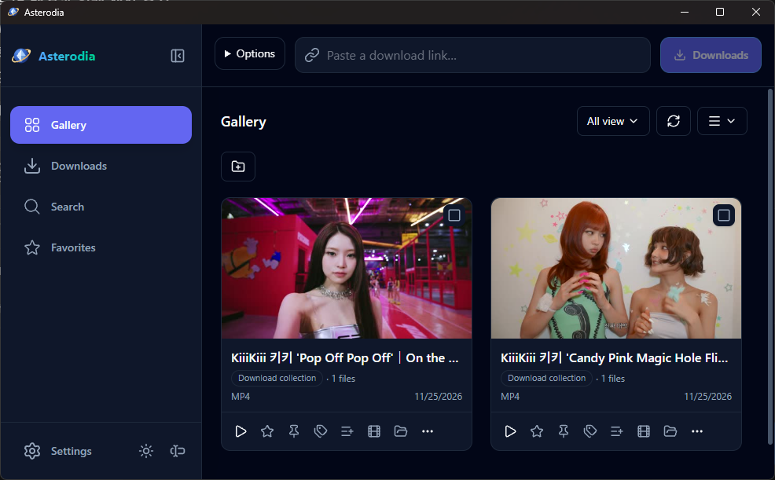

링크에서 라이브러리로
yt-dlp와 gallery-dl로 지원되는 URL의 미디어를 다운로드하세요. 진행 상황과 로그를 확인하고 실패한 작업을 다시 시도할 수 있습니다.
지원 사이트와 형식은 외부 엔진에 따라 달라집니다.
나만의 미디어 라이브러리
이미지, 영상, 오디오를 다운로드하고 태그와 앨범으로 정리하세요. GIF·WebP 편집까지 StorageBucket에서 이어집니다.
데스크톱 앱 · 오픈 소스 · MIT 라이선스

다운로드 다음까지 생각한 도구
yt-dlp와 gallery-dl로 지원되는 URL의 미디어를 다운로드하세요. 진행 상황과 로그를 확인하고 실패한 작업을 다시 시도할 수 있습니다.
지원 사이트와 형식은 외부 엔진에 따라 달라집니다.
PC에 있는 폴더도 가져오세요. 태그, 즐겨찾기, 사용자 앨범으로 묶고 제목·작성자·플랫폼으로 원하는 미디어를 찾을 수 있습니다.
폴더 가져오기는 파일을 원래 위치에 그대로 둡니다.
영상에서 GIF와 애니메이션 WebP를 만들고, 구간 자르기와 크롭으로 장면을 다듬으세요. 출력 화질도 미리 확인할 수 있습니다.
원본을 보존하면서 편집 결과를 저장합니다.
시작하기
최신 릴리스에서 배포 파일과 릴리스 노트를 확인할 수 있습니다. 필요한 외부 도구는 앱 안에서 설치하고 관리하세요.
Windows x64 다운로드최신 릴리스에서 사용 환경에 맞는 배포 파일을 다운로드하고 StorageBucket을 실행하세요.
첫 실행의 엔진 설정 안내를 따르세요. 설정의 엔진 관리에서도 설치와 업데이트가 가능합니다.
설정에서 다운로드할 미디어를 저장할 폴더를 선택하세요.
미디어 URL을 붙여 넣거나 기존 로컬 폴더를 등록해 라이브러리를 채워 보세요.